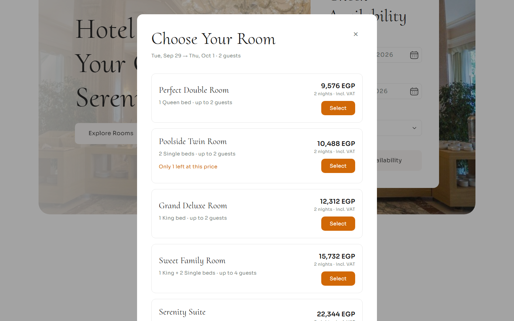

01 / 06
AURIC Build
Build.
Websites, apps, business systems and AI automation, built around how you actually work.
Client project · Law firm02 / 06
Mizan.
Practice management for a law firm, in Arabic and English, on web and mobile.
DesignWebMobileAI
mizan · arabic dashboard

AURIC product · Real estate03 / 06
Atlas.
A real-estate operating system: CRM, inventory, sales, payment plans and finance, with an AI copilot.
PlatformAI
atlas · executive dashboard

Web and mobile04 / 06
The screen your customer sees.
hotel os · booking website

What Build covers05 / 06
Built around how you work.
- 01Websitesfast · bilingual
- 02Web and mobile appsweb · mobile
- 03Business systemsERP · CRM · ops
- 04AI and automationless manual work
- 05Integrationsyour tools, connected
06 / 06
A good place to start
Running the business on spreadsheets and WhatsApp?
That's usually where a system starts. Tell us how you work today, and we'll show you what to build first.